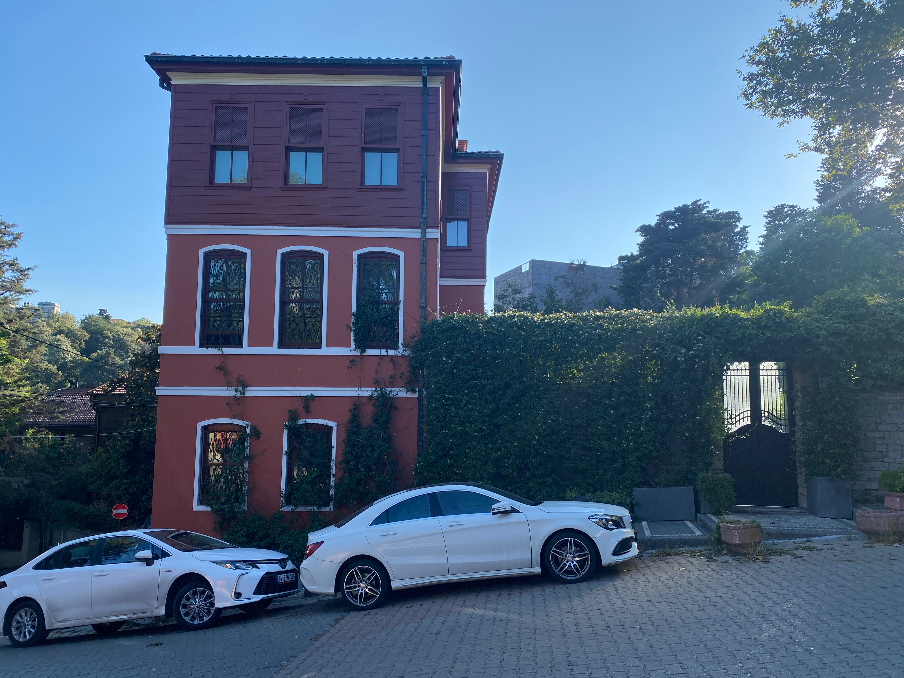

A selection of research, writing, and afternoons away from the laptop. Jacob Brinton, Boston.
Jacob Brinton is a senior at Boston University, finishing a combined B.A. / M.S. in mathematics and computer science. His research is concerned with the internal structure of large language models — in particular, how they translate between languages, and how their capacities for harm can be constrained without breaking the useful parts.
Outside of that work, his attention tends toward slow things: long days on skis, long afternoons in the mountains, and the long quiet problem of learning another language well enough to think in it. What follows is a catalogue — half of work made, half of days spent — arranged in the order they came.
Activation-patched SAE features to test the causal relevance of multilingual grammatical concepts. Quantified feature receptive fields, output geometry, and cross-layer similarity.
The mountains that decided everything else. Anything that happens at a desk has to survive a comparison to this.

Türkçe öğrenmek üzerinde çalışıyorum. The vowel harmony is a pleasure; the case system is a reckoning.
A framing question: if a model learns to refuse one misuse, can the refusal be made to generalize across a whole behavior category rather than a single prompt?
Set in Cormorant Garamond and Inter. The single accent is Risograph Apricot, printed sparingly. Photography is Jacob's own, taken between 2019 and 2026. Research bullets borrow from public posters and work in progress.
Reach: jbrin@bu.edu. Code at github.com/jebrinton. Mockup 02 of 03.